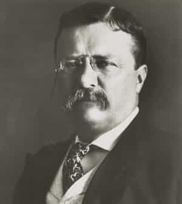

Quintus can be found at qcurtius.com. He is the author of the books On Duties, Thirty Seven, Sallust: The Conspiracy Of Catiline And The War Of Jugurtha, and other books. His work has been reviewed at Taki's Magazine. He can be followed on Twitter


A subject not often discussed is the topic of how to repair strained or broken relationships. It is one that comes up in everyone’s life, so it will be useful to make a few suggestions about it here. We will talk about relationships from friends, family, and lovers.
Relationships among friends we will treat first. The first step in this process is to make an evaluation to determine whether the relationship is worth saving or rehabilitating. It is a simple fact of life that some relationships have an expiration date; when two people no longer have anything in common, or their paths take them in divergent directions, it may be difficult to find common ground. In this situation, it is always better to let the relationship die a natural death slowly, rather than rapidly. Abrupt terminations may leave the other party with negative feelings, and this should be avoided if at all possible.
There are some instances where repair is not possible. When someone has committed a fundamental violation of trust or respect, this is a warning sign that the person was never a friend in the first place. Another point to keep in mind is that repair of a broken relationship requires—no, demands—the participation of both parties. If the other person is unwilling to participate in the process, then your efforts will be futile, and will come to nothing.
Once we have determined that the friendship is worth repairing or sustaining, the next step is to decide how to make the first approach to the other party. In this we must try to evaluate the reasons for the problems in the first place. We should make an honest assessment about how things got to where they are. Did someone say or do something that caused hard feelings on the other side? Was there some intervening cause that made the two parties diverge in plans and activities? These types of questions must be honestly and repeatedly asked. We have a tendency to minimize our own hurtful actions and exaggerate those of others, and this must be kept in mind.
The key rule at this point is to try to put ourselves in the shoes of the other party. We must try to see things from our friend’s perspective. For many people this can be difficult, as it involves getting past our own feelings of hurt or rejection and into the shoes of the other person. And yet it is essential. Very frequently the reasons for strained or broken friendships lies in the fact that there is some problem going on in the other person’s life. Only by being a perceptive student of human nature can we divine the cause. Sometimes the only thing that caused the strained relationship was some misunderstanding that was easily curable.
Keep in mind that we must try—at least in our own minds—to discover the source of the other person’s problem. This is not always possible, as human beings are not always rational. But we can at least make the effort. I remember in the film Hoffa that there was a great line from Jack Nicholson. He told one of his men, “Real problems, real grievances can be resolved. They can be negotiated. But imaginary grievances? That man is going to hate you for life.” I have no idea if Jimmy Hoffa every actually said this, but it sounds like something he would have said. He meant that we should avoid hurting the pride of our friends. We should be acutely aware how it is sometimes the intangible slights that can most rankle with a man.
When you have decided to make the first step, it is always better to initiate contact directly. Do not wait for the other person to do it. Depending on the circumstances, this should be done discreetly and without too much in the way of overpowering insistence. There is a certain type of finesse that a man should have at critical times, and this is one of them. The approach should be direct, but neither insistent nor demanding. A fish is best hooked with a lure gently laid.
Of vital importance here is that the approach be sincere. One should genuinely want to contact the other party. Sincerity is the glue that binds friendships together and permits their longevity. There should be no hypocrisy or falsity in any of our dealings with friends. This kind of thing is immediately apparent and, once detected, its whiff surrounds the offending party like a permanent cloud. If the other party is receptive to the approach, we can then gradually feel our way forward, taking care to avoid the reasons why the friendship became strained in the first place. Things may never quite go back to what they were, but at least we can find solid ground for a new frame of reference.
Two examples will suffice here. The historian William Shirer worked closely with famed correspondent Edward R. Murrow when the two were in Germany in the 1930s. Yet after the war was over, the two grew apart. Shirer’s account of the estrangement suggests that he was repelled by Murrow’s enthusiastic adoption of the anticommunist hysteria of the time. Shirer found himself gradually blackballed from most major news networks before being forced out completely. He broke with Murrow over these events. Many decades later, he approached Murrow; all venom spent, the two were able to find common ground again.

Another example makes the same point. Theodore Roosevelt was a strong-willed, insistent man, to say the least. He was in a position to choose his successor as president, and to this end he selected a man very different from him, the affable and rotund William Howard Taft. Taft eventually began to find Roosevelt an overbearing and unwelcome presence in his life. The two men eventually broke completely, a result of their personality differences and different conceptions of leadership. To his credit, Roosevelt eventually approached his old friend privately to patch things up. They were never the same, of course, but at least some cordiality was restored.
Relationships with family are of a fundamentally different sort. Because we are linked by bonds of blood (or perhaps marriage), it will be more difficult to disentangle ourselves from those with whom we have become estranged. On the other hand, it may be easier to repair such grievances, or at least find common ground, since there may be more shared experiences with the other party that act in our favor. The key here is not to expect too much. Although shared history and common blood may work in our favor, they can be counterbalanced to some extent by the fact that irrational family antagonisms can run deeper than those from strained friendships. Patience and persistence are most important here, perhaps more so than friendships with those unrelated to us.
Repairing strained relationships with lovers is perhaps the most difficult. When a man and woman have been united in the past through the coital act, an entirely different set of emotions and motivations come into play. Relationships between lovers can fail or become strained for an infinite number of reasons, and it would be impossible to discuss all of them here. It is enough for me to state my opinion that it is nearly impossible to bring an intimate sexual relationship back to what it was after it has been broken.
Strained is one thing; broken is quite another. My own experience leads me to believe that once a sexual relationship is done, it is done. One cannot really go back to what it was before. Amicable dealings are certainly possible, and happen all the time; but I would not call this friendship. I would call it an uneasy equilibrium. Love’s inflammatory presence scorches all it leaves in its wake.
Read More: 5 Proven Ways To Stop Obsessive Thoughts